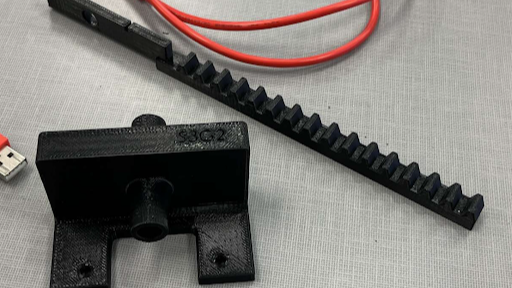

Water Valve
Description: In this project, myself along with a team of engineers created a water valve to meet certain specifications, performing effectiveness tests on a predefined situation. Together with this valve was an arduino program that controlled a small motor which defined the opening and closing of the valve. Goals of the project included leaking the least amount of water possible during testing and also allowing the right amount of water through the valve. The right amount of water was measured by the change in temperature of a container of how water which opur valve was letting cold water flow into. The process involved taking precise measurements, understanding of basic fluid mechanics, and weighing the pros and cons for various valve types. Once we had our design, we modeled the pieces of our valve in SOLIDWORKS and printed the valve, testing it thoroughly and producing a final engineering memo describing our results. The entire process took place across an entire semester, and was focused on formality, teamwork, and iterative design.
Results: After the first iteration and testing day, our valve leaked less than five percent of the total water going through, yet the leaking was significant enough to keep us a degree and a half above the target temperature. This meant that our valve's measurements needed to be revisited to prevent leaking, as a result making more of that cold water end up in the warm water. Additionally, after this first testing day, our valve had to meet the new requirement of being under a certain weight. Tweaks were made, and on the second and final testing day our design met all requirements and improved across all metrics, falling within acceptable ranges. Furthermore, our second iteration outperformed the average gate valve across more than fifty groups. Overall, this project taught me the importance of precision in engineering, as well as how important communication is within a team when working on a shared product.
